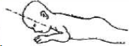
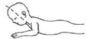
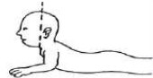

Pada waktu bayi terlentang, apakah masing-masing lengan dan
tungkai bergerak dengan mudah? Jawaban TIDAK bila salah satu
atau kedua tungkai atau lengan bayi bergerak tak terarah/tak
terkendali
Pada waktu bayi terlentang apakah ia melihat dan menatap wajah
anda?
Apakah bayi dapat mengeluarkan suara-suara lain (ngoceh) selain
menangis?
Apakah bayi suka tertawa keras walau tidak digelitik atau
diraba-raba
Ambil wool merah, letakkan di atas wajah di depan mata, gerakkan
wool dari samping kiri ke kanan kepala. Apakah dia dapat
mengikuti gerakan anda dengan menggerakkan kepalanya dari
kanan/kiri ke tengah?
Ambil wool merah, letakkan di atas wajah di depan mata, gerakkan
wool dari samping kiri ke kanan kepala. Apakah dia dapat
mengikuti gerakan anda dengan menggerakkan kepalanya dari satu
sisi hampir ke sisi yang lain?
Pada waktu bayi telungkup di alas yang datar, apakah ia
dapat mengangkat kepalanya seperti gambar ini?

Pada waktu bayi telungkup di alas yang datar, apakah ia
dapat mengangkat kepalanya sehingga membentuk sudut 45°
seperti gambar ini?

Pada waktu bayi telungkup di alas yang datar, apakah ia
dapat mengangkat kepalanya dengan tegak seperti pada gambar?

Tes Daya Dengar
Kemampuan Ekspresif
Apakah bayi dapat mengatakan aaaaa, ooooo?
Apakah bayi menatap wajah dan tampak mendengarkan anda, lalu
berbiara saat anda diam?
Apakah anda dapat seolah olah berbicara dengan bayi anda?
Kemampuan Reseptif
Apakah bayi kaget bila mendengar suara (mengejapkan mata, napas
lebih cepat)?
Apakah bayi kelihatan menoleh bila anda berbicara di sebelahnya?
Kemampuan Visual
Apakah bayi anda dapat tersenyum?
Apakah Bayi anda kenal dengan anda, seperti tersenyum lebih
cepat pada anda dibandingakan orang lain?